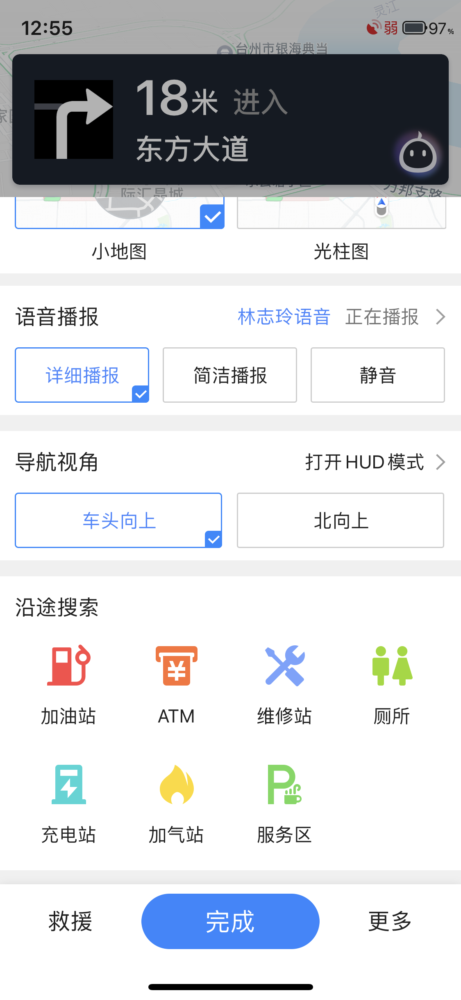
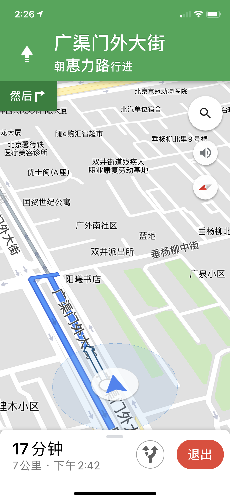
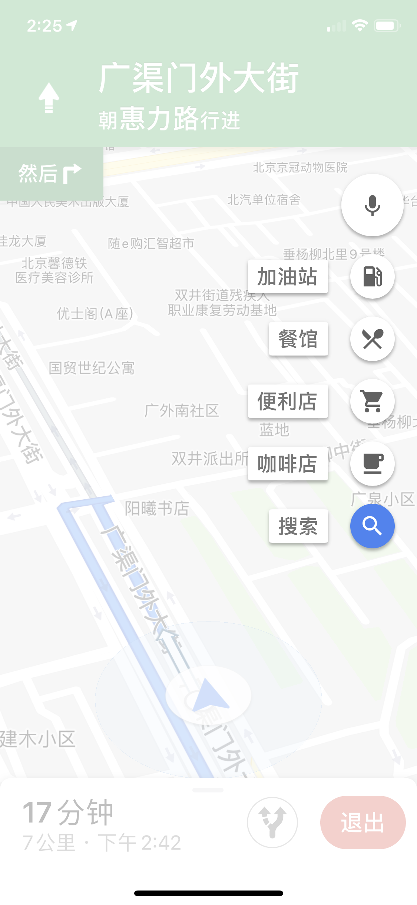
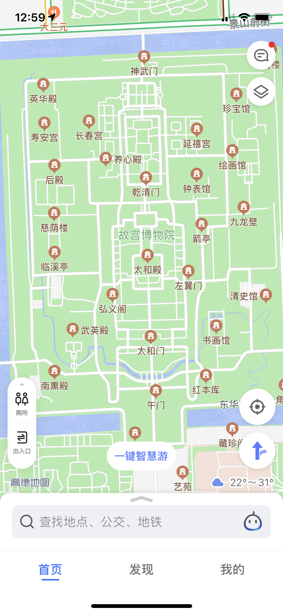
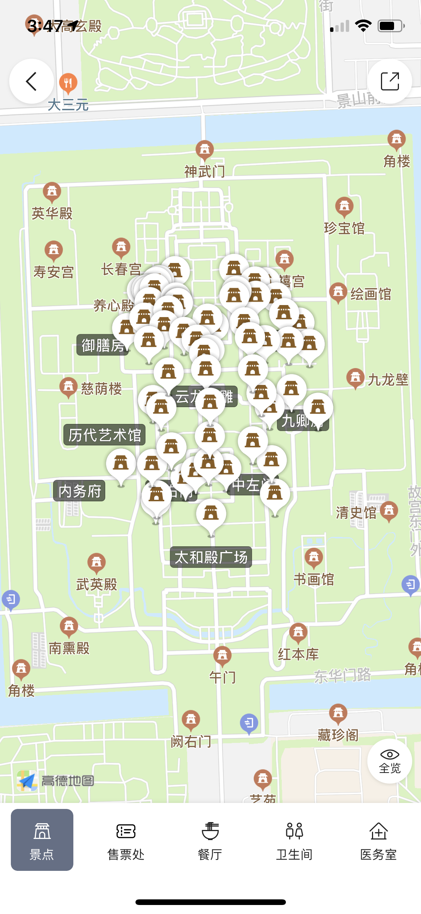

这里记录一些学生产品经理的观察和思考。一家之言，定有谬误之处，请诸君不吝指教。
记录一些现象与简单的思考。观察到并提出问题并不代表很有水平，尝试思考背后的原因我认为更重要。
地图是最常用的软件之一，高德地图是业内领先的地图软件，但还存在很多问题。
入口隐藏很深，在“设置->沿途搜索”中，且只能点击搜索默认7类地点，加油站、ATM、维修站、厕所、充电站、加气站和服务区。 经尝试，在导航界面使用语音输入”沿途搜XXX”可以正常查询。但不提供点击的入口，实在是令人匪夷所思。有时并不适合说话（连接蓝牙、车内噪声很大、普通话识别问题）。

为什么入口这么深？为什么不能搜索其他地点？下面是Google Maps的导航界面： 
Google Maps在最迟16年就已经有了沿途搜索的功能。 原因并不太可能是考虑到减少分心，因为已存在这个功能，让驾驶员点击多个界面牵扯了驾驶员的更多精力。可能就是单纯的没想到吧。
室外景点游览，在放大到一定大小时，会出现旅游地图的按键。
 
我们亲爱的高德地图呢，会重点提示卫生间、出入口位置，以及景区内的景点、餐厅、售票处、和医务室。
但这并不是我们需要的，卫生间售票处的位置不用您操劳，景区会给出提示的。 我们需要什么？我们需要游览路线图，我们需要景点介绍，这个“智慧游”完全可以像微信小程序一样。
我在游览时会使用电子地图来规划路线。在故宫博物院，微信上有小程序引领游览，但是问题是一旦微信收到消息，需退出小程序，重新点进去很繁琐，更要加载很长时间。 （PS故宫内部分地方联通4G信号极差，这是故宫的问题，但开发游览地图时是否要考虑“离线”“缓存”的问题。） 在这里我理解微信可能是“并发”，但地图一般是单发操作，在查看故宫地图时，查看不相关的其他区域地图的需求应该不高。地图怎么着也要比微信小程序更适合这种场景吧。